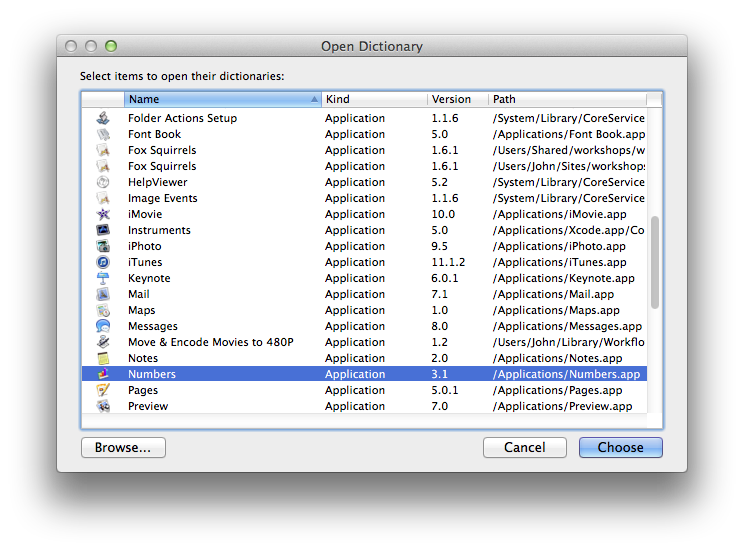
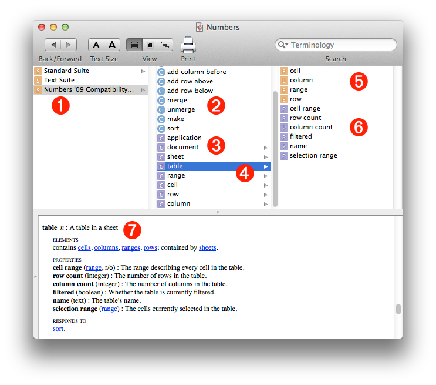

Every scriptable application on your computer contains a scripting dictionary that details all of the scriptable objects and commands that it understands and supports. To access the dictionary for the Numbers application, do the following:
DO THIS ►Launch the AppleScript Editor application from the Utilities folder (found in the Applications folder). From the AppleScript Editor’s File menu, select the menu item titled: Open Dictionary… (⇧⌘-O). The Open Dictionary dialog will appear. (⬇ see below )

The Open Dictionary dialog (⬆ see above ) displays all of the scriptable applications on your computer. The Numbers application will be in the displayed list.
DO THIS ►To open the Numbers scripting dictionary, select the Numbers application from the list of applications, and click the Choose button. (⬆ see above )
The Dictionary Viewer window displays an application’s scripting terminology. It shows the scripting commands, classes (scriptable objects), and their elements and properties, in a single window. The following callouts describe the various components of the Dictionary Viewer:

(1) Suites For organizational purposes, the terminology in scripting dictionaries is usually divided into sub-sets called suites. There are suites, such as the Standard Suite, that are common to most applications, and there are suites that are unique to the particular application, such as the Numbers ‘09 Compatibility Suite shown selected in the illustration above.
(2) Commands The middle column in the Dictionary Viewer window displays the contents of the suite selected in the left column. At the top of the middle column are the commands (verbs) used to manipulate the classes (objects) of the suite.
(3) Classes Below the commands are the classes (objects) of the selected suite. These are the building-block elements of scripting.
(4) Selected Class In the illustration above, the table class is selected, displaying its elements and properties in the right column.
(5) Elements An element is simply a class that is contained by another class. All classes, except the application class, are elements of another class. In the Dictionary Viewer window, the elements of the class selected in the middle column are displayed at the top of the right column.
(6) Properties Properties are the defining qualities of a class, such as its name, height, width, etc. The properties of the class selected in the middle column are displayed at the bottom of the right column.
(7) Definitions • Definitions not only contain the hierarchical information shown in the upper pane of the Dictionary Viewer window, but also contain the specifics about the class or command defined. By default, the definition for the selected class or command appears in the bottom pane of the Dictionary Viewer window.
For your convenience, each of the sections on this Numbers scripting website displays any relevant segment of the Numbers dictionary on the first page of the topic. For example, here is the definition for the table class, shown in the illustration above:
table n : A table in a sheet
elements
contains cells, columns, ranges, rows; contained by sheets.
properties
cell range ( range, r/o ) : The range describing every cell in the table.
column count ( integer ) : The number of columns in the table.
filtered ( boolean ) : Whether the table is currently filtered.
name ( text ) : The table’s name.
row count ( integer ) : The number of rows in the table.
selection range ( range ) : The cells currently selected in the table.
responds to
delete, exists, make, sort
The class (scriptable object) definitions contain (from the top down):
- The name of the class, and its definition
- An optional list of the elements (other classes) contained by the class. For example, a table contains columns, rows, cells, and ranges, and is itself contained by sheets.
- An optional list of the properties of the class. The name of each property is followed by a description (in parens) of the data type of its value, whether the property’s value is read-only (r/o), and a definition of the property. For example, the filtered property has a value that is a boolean (true or false), indicating whether or not the table has had filtering applied to it.
- A list of the commands (responds to) that can be used to target the class. There may be other relevant commands (verbs) that are not included in this list. For example, the commands get and set, which are used to retrieve and apply the value of the property, are an implied part the AppleScript language, and don’t usually appear in the responds to list.